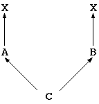
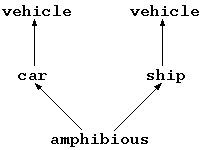

<!DOCTYPE HTML PUBLIC "-//W3O//DTD W3 HTML 2.0//EN">
<!Converted with LaTeX2HTML 95 (Thu Jan 19 1995) by Nikos Drakos (nikos@cbl.leeds.ac.uk), CBLU, University of Leeds >
<!Actually with its Japanized version JLaTeX2HTML 95 (Wed Mar 1 1995) by Masahiro Kitagawa (kitagawa@ee.es.osaka-u.ac.jp), Osaka University >
<HEAD>
<TITLE>5.17 Inheritance</TITLE>
</HEAD>
<BODY>
<meta name="description" value="5.17 Inheritance">
<meta name="keywords" value="main">
<meta name="resource-type" value="document">
<meta name="distribution" value="global">
<P>
 <H2><A NAME=SECTION000617000000000000000>5.17 Inheritance</A></H2>
 <A NAME=langlangmanualinheritance>&#160;</A>
<P>
A class can be defined by multiple-inheriting from other classes.  
A class inherited is called a parent class, and the newly defined class 
is called child class.  
The child class inherits the instance variables and the methods
from the parent class(es).
When the child class inherits methods, it can redefine the method 
of the parent class.
In addition, it can set a different access control from that 
of the parent class(es).
<P>
Conflict of names among parent classes from which the child class inherits 
can be avoided by renaming.  
Renaming the method makes it possible to invoke both 
the redefined method of the parent class and original one.
<P>
Setting the parent class to be inherit from in the definition of classes is stated as follows:
<P>
<PRE>class_def
        : class_sc CLASSNAME parents '{' class_body '}' 
        ;

parents
        : /* empty */
        | ':' parent_lists
        ;

parent_lists
        : parent
        | parent_lists ',' parent
        ;

parent
        : CLASSNAME
        | CLASSNAME '(' rename_alias_lists ')'
        ;
</PRE>
<P>
For example, if the child class <tt> X</tt> takes class <tt> A</tt> and class <tt> B</tt> as parent classes, the description is as follows:
<P>
<PRE>class X : A, B {
...
}
</PRE>
<P>
<H3><A NAME=SECTION000617100000000000000>5.17.1 Inheritance of Method</A></H3>
<P>
The methods of classes except <tt> private</tt> ones are dynamic bound 
(see Chapter <A HREF="node43.html#langlangmanualmethodexec">5.23</A>).  
That is, the method corresponding to the object referred by certain class's 
variable is not determined by type of variable, but by the object referred
<A NAME=tex2html7 HREF="footnode.html#2652">[+]</A>.  
In the following codes, the method <tt> foo</tt> of class <tt> A</tt> is called 
by the first method invocation of <tt> foo</tt>, and the method <tt> foo</tt>
which is redefined in class <tt> B</tt> is invoked by the second  
method invocation of <tt> foo</tt>.
<P>
<PRE>class A {
  public: foo;

  foo() {...}
}

class B : A {
  public: foo;

  foo() {...}
}

// In a certain code,
    B b;
    A a;

    a=&gt;new();  // Instance of class A is made.
    a-&gt;foo();  // foo of class A is called.

    b=&gt;new();  // Instance of class B is made.
    a = b;     // Replacement of the type is enabled.
    a-&gt;foo();  // foo of class B is called.
</PRE>
<P>
Methods and instance variables inherited can not be deleted.  
Using the access control, however, enables it to be unaccessible from the
child classes and/or classes which have instance variable of this class type.
All access commands can not necessarily be denied.  
The following example shows that
when an instance of class <tt> B</tt> is referred as a variable of 
the class <tt> B</tt> type, the method <tt> foo</tt> can not be invoked, but if
it referred as a variable of the class <tt> A</tt> type, the method <tt> foo</tt>
can be invoked.
And if <tt> self</tt> is referred as a variable of class <tt> A</tt> type 
at the method of subclass <tt> C</tt> of class <tt> A</tt>,
<tt> foo</tt> can be invoked.
<P>
<PRE>class A {
  public: foo;

  foo() {...}
}

class B : A {
  private: foo;
}

// In a certain code,
    B b;
    A a;

    b-&gt;foo();  // compile error
    a = b;     // type conversion is possible
    a-&gt;foo();  // OK
//

class C : B {
  void bar() 
    {
      A a;
      a = self;
      a-&gt;foo();    // OK
    }
}
</PRE>
<P>
<H3><A NAME=SECTION000617200000000000000>5.17.2 Rename</A></H3>
<P>
Although rename is used to avoid conflicting names at multiple inheritance
as described in the next section,
it is possible to use other purposes.
<P>
Rename changes the name of the parent class inherited in a certain class. 
This change of name becomes effective for both customer class and child class, 
and the previous name becomes invalid.  
Both instance variable and method can be renamed.
<P>
Rename is described as follows:
<P>
<PRE>rename_alias_lists
        : rename_alias
        | rename_alias_lists rename_alias
        ;

rename_alias
        : 'rename' IDENTIFIER IDENTIFIER ';'
        ;
</PRE>
<P>
When the name is changed from <tt> old_name1</tt> in parent class <tt> A</tt> 
to <tt> new_name1</tt> in child class <tt> B</tt>, and from <tt> old_name2</tt> 
to <tt> new_name2</tt>, program is as follows:
<P>
<PRE>class B : A (
  rename old_name1 new_name1;
  rename old_name2 new_name2;) {
...
}
</PRE>
<P>
If the previous name is not defined in the parent class, an error will occur.  
A name can not be renamed more than once.
<P>
In the following code, if class <tt> B</tt>, which is a child class 
of class <tt> A</tt>, renames a method of class <tt> A</tt>, the new name 
becomes effective in the class which has variables of class <tt> B</tt> type
and the child class of class <tt> B</tt>.  
However, if instance of class <tt> B</tt> is referred as a variable of 
class <tt> A</tt>, then the previous name of method ``<tt> foo</tt>'' of class <tt> A</tt>
will become effective and the new name ``<tt> bar</tt> will become invalid.
<P>
<PRE>class A {
  public: foo;

  foo() {...}
}

class B : A {rename foo bar;} {
  public: bar;
}

// In a certain code,
    B b;
    A a;

    b-&gt;foo();  // compile error
    b-&gt;bar();  // OK
    a = b;     // replace of the type is possible
    a-&gt;foo();  // OK  (same as b-&gt;bar())
    a-&gt;bar();  // compile Error
</PRE>
<P>
Reusing of the previous name in a definition of a class member is possible 
after renaming.
In this case, however, it is necessary to be careful because the same name 
will refer to a different method or instance variable.  
The following program shows that the <tt> old_foo</tt> method is called 
in the first invocation of the <tt> foo</tt> method 
<A NAME=tex2html8 HREF="footnode.html#2653">[+]</A> 
and the <tt> foo</tt> method of class <tt> B</tt> is called in
second invocation of the <tt> foo</tt> method.
<P>
<PRE>class A {
  public: foo;

  foo() {...}
}

class B : A {rename foo old_foo; } {
  public: foo, old_foo;

  foo() {...}
  old_foo() {...}  // foo method (old name of old_foo)
                   // old_foo) of class A is redefined.
}

// In a certain code,
    B b;
    A a;

    b=&gt;new();  // Instance of class B is made.
    a = b;     // Replace of the type is possible.
    a-&gt;foo();  // old_foo method of class B is called.
    b-&gt;foo();  // foo method of class B is called.
</PRE>
<P>
<H3><A NAME=SECTION000617300000000000000>5.17.3 Alias</A></H3>
<P>
Alias has a function which enables it to refer to a method 
defined in the parent class by another newly 
defined method name.  
By contrast with rename, both the method name defined in the parent class 
which is aliased, and the new method name defined by an alias, are valid.  
That is, using the function of alias can refer to the implementation of 
a method by the names of two other methods.  
Accordingly, the type of arguments and return value of the method which 
has a newly defined name is the same as the type of the method defined 
in the parent class. 
Instance variable cannot be aliased.
<P>
Alias is described as follows;
<P>
<PRE>rename_alias_lists
        : rename_alias
        | rename_alias_lists rename_alias
        ;

rename_alias
        | 'alias' IDENTIFIER IDENTIFIER ';'
        ;
</PRE>
<P>
If the method <tt> name1</tt> of the parent class <tt> A</tt> is renamed 
<tt> alias_of_name1</tt> in the child class <tt> B</tt> and <tt> name2</tt> 
is replaced by <tt> alias_of_name2</tt>, the following description is uses.
<P>
<PRE>class B : A (
  alias name1 alias_of_name1;
  alias name2 alias_of_name2; ) {
...
}
</PRE>
<P>
If the method to be aliases in not defined
in the parent class, an error will occur in compiling. 
Furthermore, it is impossible for the same method to have two aliases, 
and for the alias is declared as  <tt> public</tt> or <tt> protected</tt>.  
That is an alias becomes private method and cannot access from other classes.
<P>
An alias is introduced to call an implementation of the parent class's method,
which is hidden by redefinition.  
For example, there is a case, in which the child class <tt> B</tt> of 
class <tt> A</tt> changes a method defined in class <tt> A</tt> to a method 
in which the method defined in  class <tt> A</tt> is invoked
after some preliminary processing.  
In this case, Smalltalk treats it by describing it as <tt> super</tt>.  OZ++ uses alias and this is described as follows;
<P>
In the following code, for example, method <tt> foo</tt> of class <tt> B</tt> calls 
method <tt> foo</tt> of itself, and there is no way to invoke method <tt> foo</tt>
defined in class <tt> A</tt>.
<P>
<PRE>class A {
  public: foo;

  foo() {...}
}

class B : A {
  public: foo;

  foo() 
    {
      foo();        // Calling of itself
    }
}
</PRE>
<P>
Thus, using an alias named <tt> super_foo</tt> to method <tt> foo</tt> implemented 
in class <tt> A</tt> can call <tt> super_foo</tt> in class <tt> B</tt>'s <tt> foo</tt> code.
<P>
<PRE>class A {
  public: foo;

  foo() {...}
}

class B : A (alias foo super_foo;) {
  public: foo;

  foo() 
    {
      super_foo();    // foo of class A is called.
    }
}
</PRE>
<P>
<H3><A NAME=SECTION000617400000000000000>5.17.4 Multiple Inheritance</A></H3>
<P>
OZ++  can specify the multiple parent class when the child class is defined.  
If the names are conflicted, the rename function can be used 
as described above.  
Furthermore, as the method name defined in the parent class is conflicted, 
the alias command is available to solve this problem.  
Of course, there is no need to use rename or alias when conflicted name 
is not used in this case (includes usage of <tt> public</tt> or <tt> protected</tt>).
<P>
If the parent classes are  class <tt> A</tt> and class <tt> B</tt>, 
the child class is defined as class <tt> X</tt>, and  the method name <tt> foo</tt> 
is declared in both class <tt> A</tt> and class <tt> B</tt>, for example, 
the following program is used to avoid name conflict.
<P>
<PRE>class A {
  public: foo;

  void foo() {...}    // Method foo is defined.
}

class B {
  public: foo;
  void foo() {...}    // Method foo is defined.
}

// rename and alias can avoid duplication of name foo.
class C : A (
    rename foo a_foo;          // foo of A is renamed a_foo.
    alias foo super_a_foo; ),  // The implementation of 
             // foo of A is given an alias super_a_foo.

  B (
    rename foo b_foo;          // foo of B is renamed 'b_foo'.
    alias foo super_b_foo; ) { // The implementation of 
             // foo of B is given an alias as super_b_foo.

  public: a_foo, b_foo;

  void a_foo() 
    {                          // foo of A is renamed a_foo.
      ...
      super_a_foo();           // The implementation of A's foo
      ...                      // is given an alias super_a_foo.
    }

  void b_foo() 
    {                          // foo of B is renamed 'b_foo'.
      ...
      super_b_foo();           // The implementation of B's foo
	                           // is given an alias as super_b_foo.
      ...
    }
}
</PRE>
<P>
When the instance of class <tt> C</tt> is referred by a variable of type <tt> A</tt> 
or type <tt> B</tt>, <tt> a_foo</tt> or <tt> b_foo</tt>, respectively, of class <tt> C</tt> 
are invoked by invocation of method <tt> foo</tt>.
<P>
<PRE>// In a certain code,
  C c;
  A a;
  B b;

  c=&gt;new();      // instance of C is made.
  c-&gt;a_foo();    // a_foo of C is called.
  c-&gt;b_foo();    // // b_foo of C is called.
  c-&gt;foo();      // compile error is due to 
                 // non-definition of the name
                 // foo because of renaming.
  a = c;         // type conversion is possible.
  b = c;         // type conversion is enabled.
  a-&gt;foo();      // a_foo of C is called.
  b-&gt;foo();      // b_foo of C is called.
</PRE>
<P>
<H3><A NAME=SECTION000617500000000000000>5.17.5 Repeated Inheritance</A></H3>
<P>
Repeated inheritance is pointed to two or more appearances of the same class 
when it is traced to the ancestors of its parent class.  
The parent class of classes <tt> A</tt> and <tt> B</tt> is assumed to be class <tt> X</tt>,
and the parent classes of class <tt> C</tt> are assumed to be classes <tt> A</tt> 
and <tt> B</tt>, for example.  
In this case, class <tt> X</tt> appears twice in the ancestors of class <tt> C</tt> 's
parent class, and then the instance of class <tt> C</tt> has two parts of 
class <tt> X</tt>.  
This case is illustrated in Figure <A HREF="node37.html#langinheritrepeatinherit">5.17--1</A>. 
OZ++ can not be treated to join two parts of class <tt> X</tt> to one 
<A NAME=tex2html9 HREF="footnode.html#2532">[+]</A>.
<P>
<A NAME=langinheritrepeatinherit>&#160;</A>
<P>
<CENTER>
<TABLE>
<TR>
<TD WIDTH=30></TD>
<TD>

</TD>
<TD WIDTH=30></TD>
</TR>
<CAPTION ALIGN=BOTTOM><STRONG>Fig 5.1--3:</STRONG>A part of common ancestor</CAPTION>
</TABLE>
</CENTER>

<P>
The following figure shows how repeated inheritance controls the parts 
duplicated in classes.  
Imagine the following example.  
Assume that there is a class <tt> vehicle</tt>, and <tt> car</tt> and <tt> ship</tt> 
are its child classes.  
Then, <tt> amphibious</tt> is defined by multiple inheritance from <tt> car</tt> 
and <tt> ship</tt> (see Figure <A HREF="node37.html#langinheritamphibious">5.17--2</A>).
<P>
<A NAME=langinheritamphibious>&#160;</A>
<P>
<CENTER>
<TABLE>
<TR>
<TD WIDTH=30></TD>
<TD>

</TD>
<TD WIDTH=30></TD>
</TR>
<CAPTION ALIGN=BOTTOM><STRONG>Fig 5.1--4:</STRONG>Inheritance chart of class 'amphibious'</CAPTION>
</TABLE>
</CENTER>

<P>
 In the first place, instance variables <tt> speed</tt> and <tt> fuel</tt> are defined, and method <tt> set_speed</tt> and <tt> set_fuel</tt> are determined to set these values in class <tt> vehicle</tt>.
<P>
<PRE>class vehicle {
 public:    set_speed, set_fuel;
 protected: speed, fuel;

  int speed;
  int fuel;

  void set_speed (int x) 
    {
      speed = x;
    }

  void set_fuel(int x) 
    {
      fuel = x;
    }
}
</PRE>
<P>
 It is assumed that these methods are not redefined in class <tt> car</tt> and class <tt> ship</tt>, and the method in class <tt> vehicle</tt> is used as variables.
<P>
<PRE>class car : vehicle {
 public:    set_speed, set_fuel;
 protected: speed, fuel;
}

class ship : vehicle {
 public:    set_speed, set_fuel;
 protected: speed, fuel;
}
</PRE>
<P>
In class <tt> amphibious</tt>, it is assumed that the definition of speed is divided 
into <tt> speed</tt> of <tt> car</tt> and <tt> speed</tt> of <tt> ship</tt>, and the definition 
of <tt> fuel</tt> is common in both <tt> car</tt> and <tt> ship</tt>.
<P>
In the first step, <tt> speed</tt> is renamed as follows because the name is 
conflicted between <tt> car</tt> and <tt> ship</tt>.
<P>
<CENTER>
<TABLE>
<TR ALIGN=CENTER>
<TD>speed of car</TD><TD></TD><TD>car_speed</
TD>
</TR>
<TR ALIGN=CENTER>
<TD>speed of ship</TD><TD></TD><TD>ship_speed
</TD>
</TR>
</TABLE>
</CENTER>

<P>
It is necessary that <tt> set_car_speed</tt> and <tt> set_ship_speed</tt> be newly 
defined, so that both speed of car and speed of ship are set up individually 
for <tt> amphibious</tt>.  
However, merely calling <tt> set_speed</tt> makes it unclear which <tt> speed</tt> 
should be set up, so this method is not opened (means not <tt> public</tt>).
<P>
In the next step, it is necessary to rename <tt> fuel</tt> because the 
name conflict similar to the case of <tt> speed</tt> also occurs in <tt> fuel</tt>.  
For the same meaning of <tt> fuel</tt> between <tt> car</tt> and <tt> ship</tt>, however, 
it is necessary that each value of <tt> fuel</tt> always be the same.  
Thus, <tt> set_fuel</tt> of car and <tt> set_fuel</tt> of <tt> ship</tt> should be 
redefined.  
If these names are redefined, however, conflict of name will occur, so 
the method should be renamed.  In short, it is necessary to rename as follows:
<P>
<CENTER>
<TABLE>
<TR ALIGN=CENTER>
<TD>car $B$N(B fuel</TD><TD></TD><TD>car_fuel</TD
>
</TR>
<TR ALIGN=CENTER>
<TD>set_fuel of car</TD><TD></TD><TD>car_set_
fuel</TD>
</TR>
<TR ALIGN=CENTER>
<TD>fuel of ship</TD><TD></TD><TD>ship_fuel</
TD>
</TR>
<TR ALIGN=CENTER>
<TD>set_fuel of ship</TD><TD></TD><TD>ship_se
t_fuel</TD>
</TR>
</TABLE>
</CENTER>

<P>
In addition, renaming the above two methods will delete the method 
<tt> set_fuel</tt>, so it is necessary to newly define it.
<P>
As things turned out, the class of <tt> amphibious</tt> is shown as follows:
<P>
<PRE>class amphibious :
  car(
    rename speed car_speed;
    rename fuel car_fuel;
    rename set_fuel car_set_fuel; ),

  ship(
    rename speed ship_speed;
    rename fuel ship_fuel;
    rename set_fuel ship_set_fuel; ) {

 public: set_car_speed, set_ship_speed, set_fuel;

  void set_car_speed (int x) 
    {
      car_speed = x;            // speed of car is set.
    }

  void set_ship_speed (int x) 
    {
      ship_speed = x;           // speed of ship is set.
    }

  void set_fuel (int x) 
    {
      car_fuel = ship_fuel = x; // fuel of car and ship is set.
    }

  void car_set_fuel(int x)      // set_fuel of car is redefined.
    {     
      set_fuel(x);
    }

  void ship_set_fuel(int x)     // set_fuel of ship is redefined.
    {    
      set_fuel(x);
    }
}
</PRE>
<P>
 The naming of <tt> set_fuel</tt> where <tt> car</tt> type variable refers 
the instance of class <tt> amphibious</tt> is shown as follows;
<P>
<UL><LI>  <tt> set_fuel</tt> of <tt> car</tt> is renamed <tt> car_set_fuel</tt> 
in class <tt> amphibious</tt>.
<LI> <tt> car_set_fuel</tt> is redefined.
<LI> hence <tt> car_set_fuel</tt> of <tt> amphibious</tt> is called.
<LI>  <tt> set_fuel</tt> of <tt> amphibious</tt> is called from <tt> car_set_fuel</tt> 
of <tt> amphibious</tt>.
<LI>  <tt> car_fuel</tt> viz. fuel of car and <tt> ship_fuel</tt> viz. fuel of ship 
are set up same value.
</UL>
<P>
It is similar to the case of binding to variables of the type <tt> ship</tt>, 
when <tt> ship</tt> type variable referre.  
Thus, it is enable to treat the same variable as <tt> fuel</tt>.
<P>
As described above, duplicated classes have their parts separated 
by using repeated inheritance in OZ++.  
However, all instance variables can be treated as the same by 
the technique described here.  
If necessary, a part of them can be made to look the same.
<P>

<P>

<P>
<BR> <HR>
<P><ADDRESS>
Copyright 1994-1997 Information-technology Promotion Agency, Japan
</ADDRESS>
</BODY>
